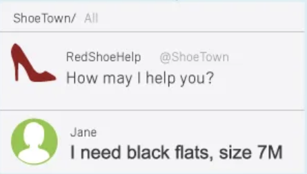
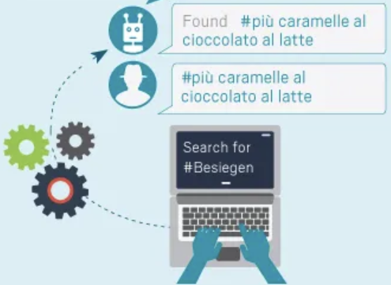
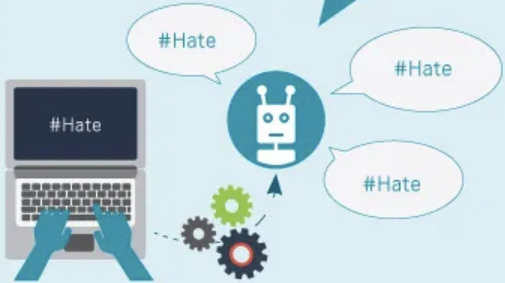
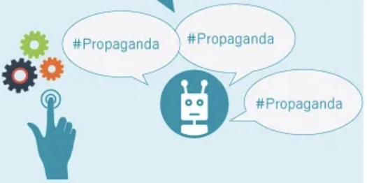
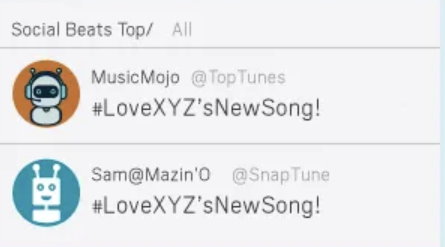
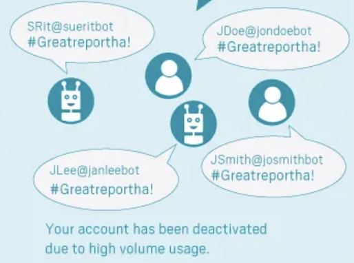
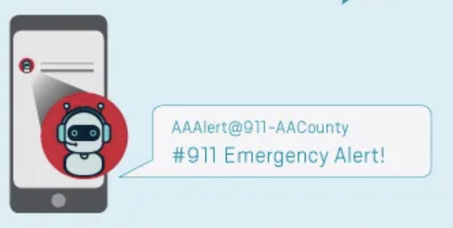
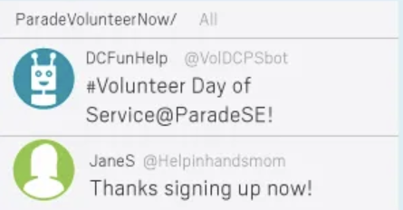

How do bots work?
What is a bot?
Bots are automated entities, often purchasable in bulk from businesses within a growing shadow economy specialized in online influence. These digital agents execute predetermined tasks using code snippets, making them a pivotal part of various online activities. Certain social media platforms, like Twitter, have historically accommodated the automation of accounts, where even legitimate users, including journalists, academics, companies, and everyday individuals, employ bots to streamline their daily online operations. Notably, some developers invest significant time in crafting bots to appear authentic before selling them to the highest bidder. (Smith & Dotto, 2019)
Bots play a substantial role in amplifying and disseminating misinformation, encompassing fake news and false conspiracy theories. They swiftly retweet misleading articles, facilitating their rapid spread, with a considerable portion of content from low-credibility sources likely originating from bots. These automated agents employ tactics like mentioning influential figures, such as political personalities, to link to false or misleading content in the hope of these figures sharing it, thus enhancing its reach and perceived credibility. Even verified Twitter users, including celebrities, have been found to contribute to the dissemination of COVID-19-related misinformation. Notably, the removal of former President Donald Trump from the platform led to a significant reduction in false claims about the 2020 election.
Surprisingly, humans often struggle to differentiate social bots from genuine accounts, rendering them susceptible to the spread of misinformation. Research indicates that humans retweet both bots and other humans at similar rates, particularly concerning low-credibility content. Fake news articles tend to propagate faster on platforms like Twitter because humans are more inclined to retweet them than bots. This raises concerns about the potential exploitation of intelligent social bots for mass deception or political manipulation.
In the realm of political discourse, bots have infiltrated online discussions, evident through their substantial presence in political tweets during the 2016 U.S. presidential election. Moreover, unverified accounts, which may potentially be bots, have played a role in sharing fake or highly biased news articles related to election campaigns. Bots have also engaged in disseminating misinformation during political campaigns, employing tactics like hashtag hijacking and flagging legitimate content from opponents to disrupt their messaging. These findings underscore the pivotal role of bots in shaping online political narratives, while highlighting the challenges in combating the spread of misinformation. (Himelein-Wachowiak et al., 2021)
Social media bot uses
Commercial activity
Social media bots facilitate company-to-customer relations, including selling products or services
Counterterrorism and terrorism
Social media bots allow for faster searching and detection if online activity by using foreign language search terms
Hate speech
Social media bots can propagate hate speech on social media platforms, making the subject matter appear to gain mainstream popularity
Information operations
The intentional spread of propaganda to sway public opinion, limit free speech and manipulate democratic processes and elections
Entertainment
Social media bots are used on social media specifically to find, add, or create the illusion of online fame or popularity
Harassment
Social media bots can be used to overwhelm the user’s account to the point of deactivation
Notifications
Social media bots provide automated watching capabilities to capture breaking news, ideas or events
Social and civic engagement
Social media bots post to encourage and heighten civic engagement and participation
